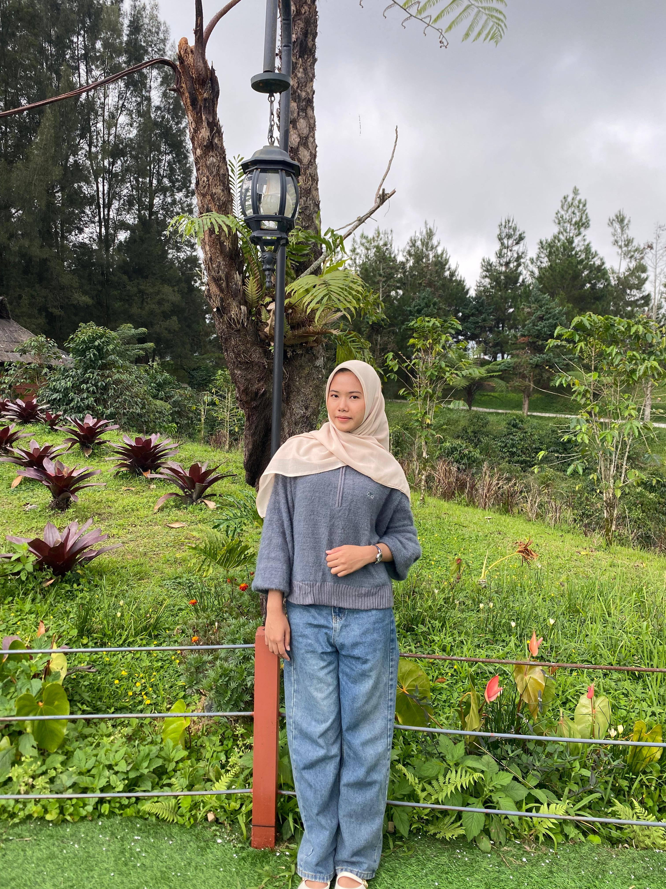

Foto Profil

📝 Tentang Saya
Halo! Perkenalkan nama saya Hana Nurul Utami. Saya lahir di
Kisaran pada tanggal 27 Maret 2006. Saat ini saya sedah kuliah
menjadi Mahasiswa semester 4 di sebuah Universitas Muhammadiyah Sumatera Utara
di Medan.
Saya memiliki ketertarikan yang besar dalam bidang teknologi,
terutama web development dan artificial intelligence.
Saya selalu bersemangat untuk belajar hal-hal baru dan mengembangkan
keterampilan saya.
📋 Data Pribadi
- Nama Lengkap: Hana Nurul Utami
- Tempat, Tanggal Lahir: Kisaran, 27 Maret 2006
- Alamat: Jl. KH.A Dahlan Aek Kanopan Timur
- Status: Belum Menikah
- Agama: Islam
- Kewarganegaraan: Indonesia
🎨 Hobi & Minat
- Programming dan coding
- Membaca buku
- Berenang dan jogging
- Traveling
- Menonton film dan series
🎓 Riwayat Pendidikan
-
SD Negeri 112298 Aek Kanopan (2012 - 2018)
Lulus dengan nilai rata-rata 8.5
-
SMP Negeri 1 Kualuh Hulu Aek Kanopan (2019 - 2021)
Lulus dengan nilai rata-rata 8.7
-
MAS Al Kautsar Al Akbar Medan (2022 - 2024)
Jurusan IPA, lulus dengan nilai rata-rata 9.0
-
Universitas Muhammadiyah Sumatera Utara (2024 - 2028)
Jurusan Sistem Informasi, IPK 3.85/4.00
💻 Keterampilan
- Programming Languages: HTML, JavaScript, Python, Java
- Database: MySQL, MariaDB
- Tools: Git, VS Code, Linux
- Languages: Indonesia (Native), English (Advanced)
💼 Pengalaman Akademik
- Algoritma dan Pemrograman(Python)-Semester 1
Membuat program dan pencatatan dan pengelolaan tugas menggunakan Python
- Sistem Informasi Manajemen(Draw.io)-Semester 3
Menyusun Flowchart, ERD, dan DFD untuk menggambarkan alur kerja, hubungan data, serta proses yang terjadi dalam sistem
📞 Kontak Saya
📱 Social Media
Instagram